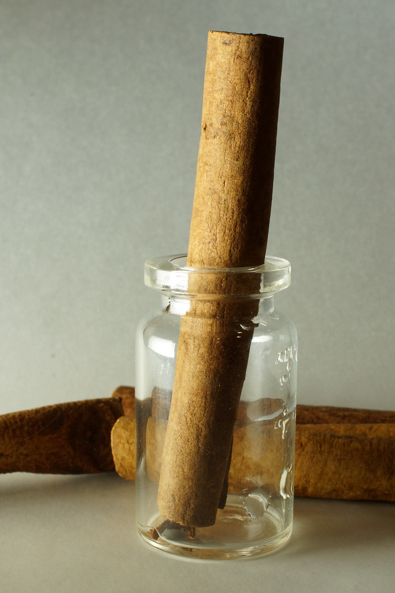

Cinnamon, from Market Stall to Capsule
A spice with centuries of kitchen history, and a few honest words about what that history is and is not.

An old companion
Cinnamon is one of the oldest traded spices in the world. It has crossed oceans, scented markets, and flavored cooking across countless cultures for a very long time. The warm, woody aroma is instantly familiar to almost everyone.
It comes from the inner bark of certain trees, peeled, dried, and curled into the quills you know, then ground or extracted. From a bustling stall in a spice market to a tidy capsule, the journey is long but the source is humble: bark from a tree.
From bark to bottle
Turning cinnamon into a supplement ingredient means concentrating the bark into a measured extract. The advantage of an extract is consistency. A pinch from the jar varies from one cook to the next, while a standardized amount is the same in every capsule.
Naveo uses cinnamon bark at 70 mg per serving. We list that number plainly so you always know what a serving contains, no guesswork and no rounding up for effect.
What we will and will not say
Cinnamon is a food and a traditional kitchen staple, and that is how we talk about it. We are not going to make claims about what it does inside the body, because honest writing means staying within what is genuinely established.
What we can say is simple: it is a familiar, long-used spice, included at a stated amount on a label you can read in full. That is the whole of our claim.
A place at the table
You can enjoy cinnamon the everyday way too, stirred into oats, dusted over fruit, steeped in tea. None of that needs a supplement to be worthwhile.
Naveo simply offers it in a measured, repeatable form, alongside five other plainly listed ingredients.
From a bustling stall to a tidy capsule, the source is humble: bark from a tree.
This article is general wellness information and is not medical advice. Naveo is a food supplement and does not replace a varied diet. Talk to your doctor about your individual needs.